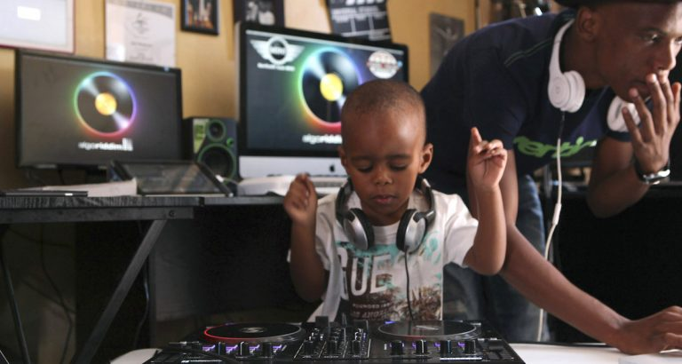
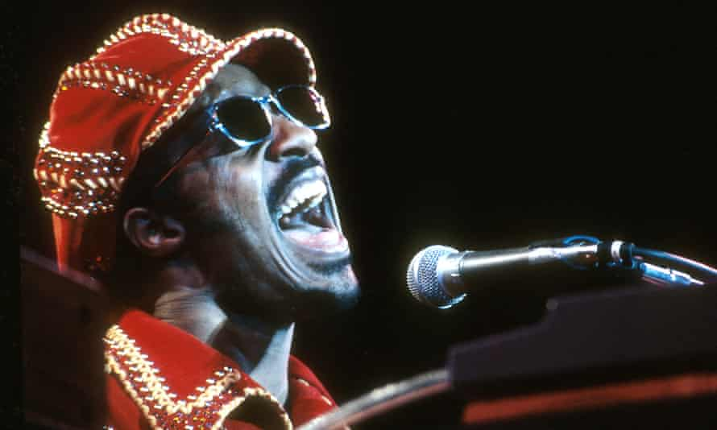

From the time we are born, music is present in our lives. Whether it is through the radio, the whistling of a passer-by, the rhytmic ringing of a bell, or even the harmony produced by chimes blowing in the wind, music can be heard all around the globe at any moment. We are conditioned to absorb rhythm and harmony from day one. Thus, it is no surprise that almost every culture has taken to producing, sharing, and enjoying music of their own.
Even without professional training, many of us have developed a sense of what sounds "good" and what does not. The truth is that all musical preferences are valid and necessary as music provides a medium through which we can express important ideas that sometimes can't be put into words. However, it is important to note that it is not a lack musical vision that is preventing a more inclusive enviornment for music production, but is instead a lack of the means necessary to do so. This being said, the capability for all of us to create and share our own music is overly burdened by the expense of acquiring musical education and technology, the rigid standards that define music, and the time required to adhere to said standards.
My vision for the near future is a culture more equipped with the tools necessary to affordably, easily, and effectively create and share music together. I believe everyone should have the ability to express their musical vision without first having to meet the exclusive requirements for entry. Providing the public with the devices capable of simplifying the music process will further our means of expression and give us a better understanding of eachother.
I am a second-year student at Georgia Tech, and I am currently studying Computational Media with a concentration in Music Technolgy and Media. I am also minoring in Industrial Design. For at least the past 15 years, music has been an essential part of my interests, inspirtation, and identity. Everything I do, and everything I care to do professionally is for the sake of furthering music's capacity to bring people together. That's why I am putting together this website: an artifact for me to look back on when I've reached my goal.
Title Screen Music for Video Game:
Rap over Type Beat:
Rap over Friend's Beat:
Your Ideas: